Stand: 22.05.2026
Repository URL: https://github.com/FionnLaesser/M324_PROJEKT_TODOLIST
In diesem Pull Request wurde eine echte Änderung an der Todo-Liste umgesetzt. Leere Todo-Beschreibungen sollen nicht gespeichert werden. Das gilt auch dann, wenn das Eingabefeld nur Leerzeichen enthält.
Umgesetzte Änderung:
trim() bereinigt.Für die Änderung wurde ein Issue erstellt. Das Issue beschreibt, dass leere Todos verhindert werden sollen und nennt die wichtigsten Akzeptanzkriterien.
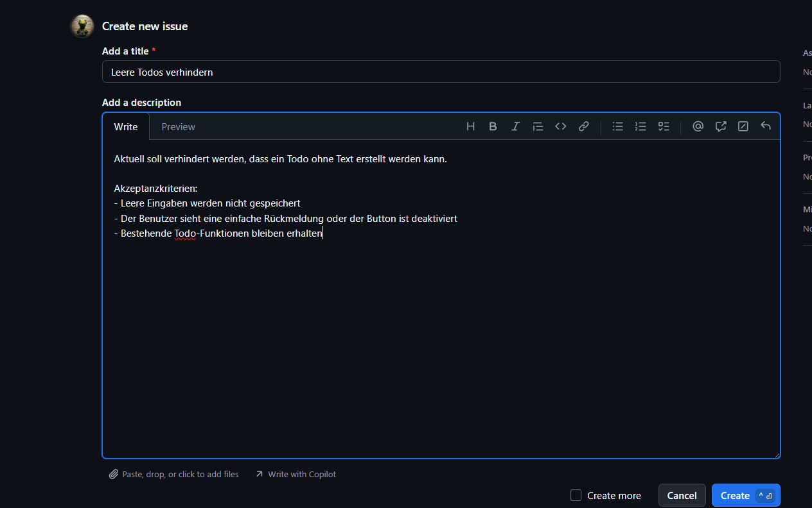
Für die Umsetzung wurde ein eigener Feature-Branch erstellt. Der Branch heisst
feature/todo-validation und trennt die Änderung vom main-Branch.
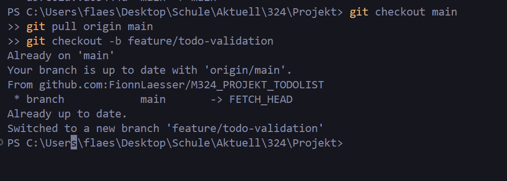
Die Codeänderung verhindert, dass leere Todo-Beschreibungen gespeichert werden.
Dabei wird geprüft, ob die Beschreibung null, leer oder nur aus Leerzeichen
besteht.
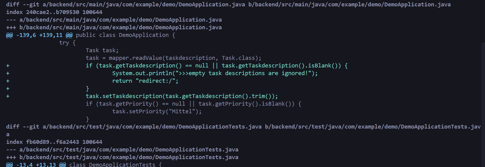
Der Commit enthält den Bezug zum Issue mit closes #2. Dadurch kann GitHub das
Issue nach dem Merge automatisch schliessen.
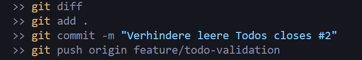
Der Pull Request wurde von feature/todo-validation nach main erstellt. Damit
wurden die Änderungen aus dem Feature-Branch zur Übernahme in den Hauptbranch
vorgeschlagen.
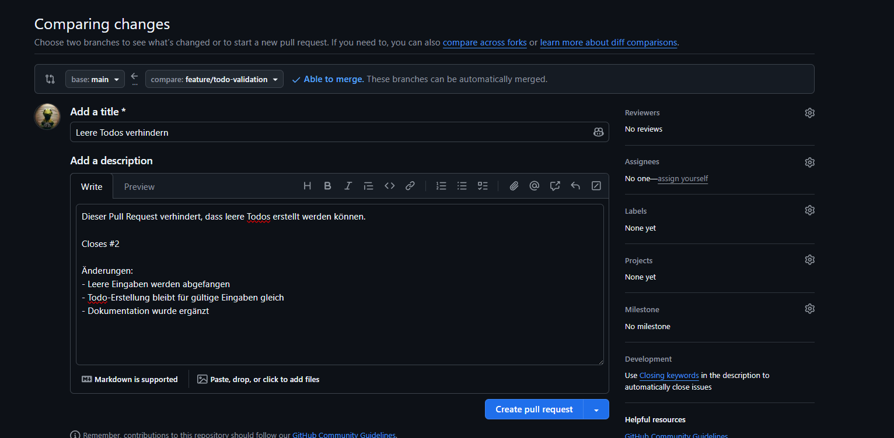
Für das Review wurde ein Sparring-Partner als Reviewer eingetragen. Dadurch wurde die Änderung nicht nur allein umgesetzt, sondern auch von einer zweiten Person angeschaut.
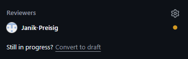
Das Review wurde im Pull Request dokumentiert. Der Kommentar bestätigt, dass die Änderung nachvollziehbar ist, das Issue erfüllt und keine Konflikte vorhanden sind.
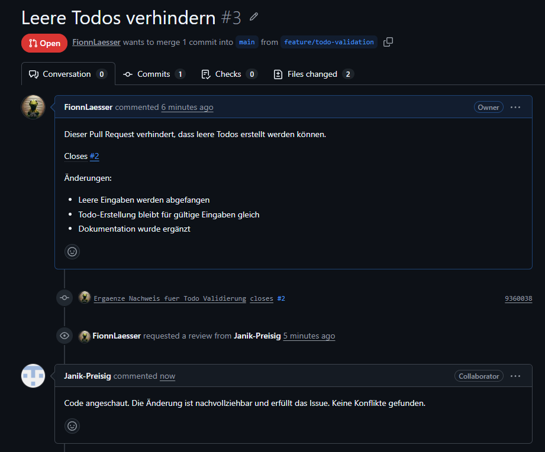
Der Pull Request wurde überprüft und war bereit zum Merge. GitHub zeigte keine Konflikte mit dem Base-Branch an. Dadurch konnte der Pull Request durchgeführt werden.
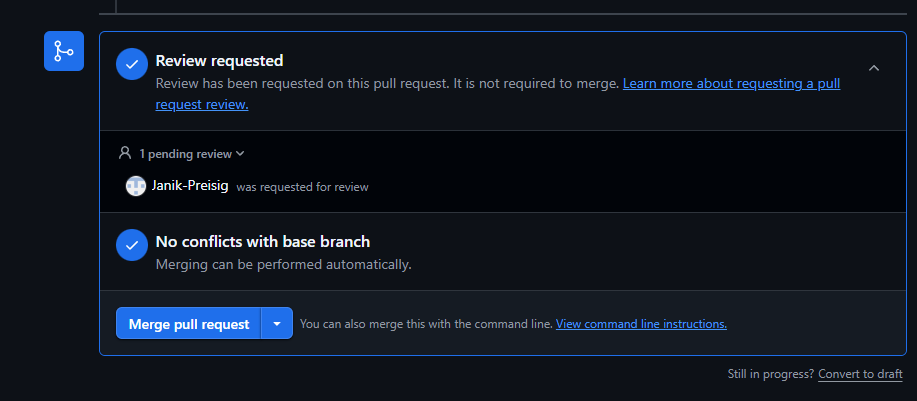
Der Pull Request wurde online auf GitHub in den main-Branch gemerged. Damit
wurden die Änderungen aus dem Feature-Branch in den Hauptstand übernommen.
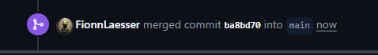
Nach dem Merge wurde das Issue automatisch geschlossen, weil der Commit oder Pull
Request den Hinweis closes #2 enthielt.
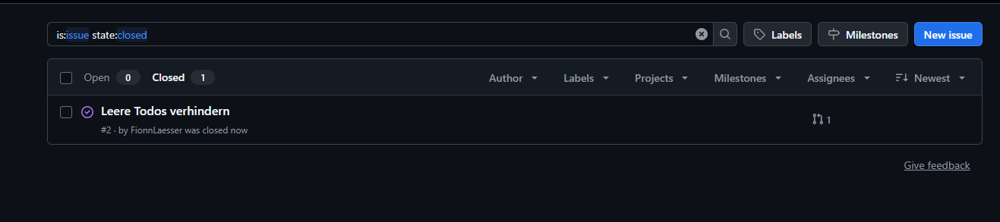
Nach dem Online-Merge wurde lokal wieder auf main gewechselt und der aktuelle
Stand von GitHub geholt. Danach wurde mit git status und
git log --oneline -5 --decorate geprüft, dass das lokale Repository
aktualisiert ist.
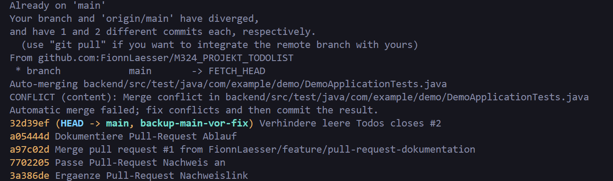
In diesem Projekt wurde ein Issue zur Todo-Validierung erstellt. Danach wurde ein
eigener Feature-Branch feature/todo-validation verwendet, eine echte
Codeänderung umgesetzt, ein Commit mit closes #2 erstellt und ein Pull Request
nach main durchgeführt. Der Pull Request wurde durch den Sparring-Partner
überprüft, online gemerged und das Issue wurde automatisch geschlossen. Danach
wurde das lokale Repository aktualisiert.